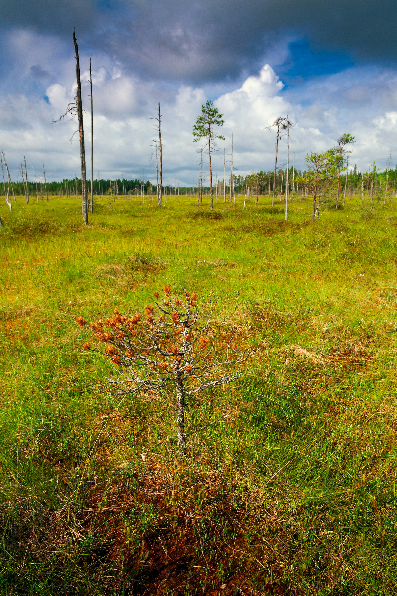
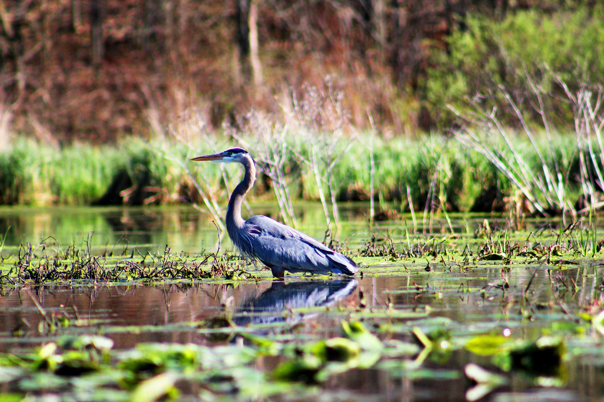
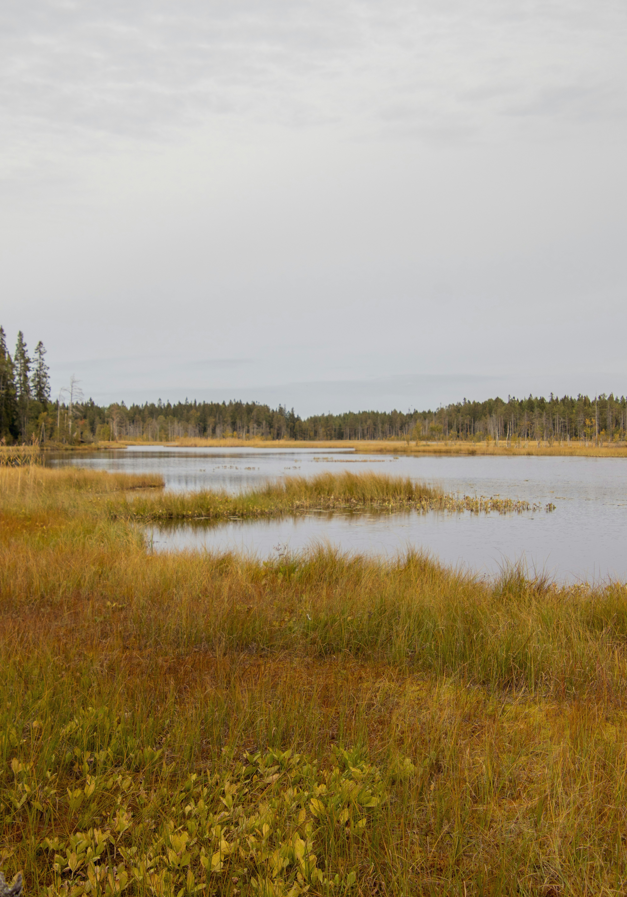

Var sker exploatering av Sveriges våtmarker?
Klicka eller hovra över regionerna för att se fördelningen av indirekt och direkt exploatering
Laddar karta över Sverige...

Vad är en våtmark?
Ett område där vatten finns precis över eller under markytan och där hälften av vegetationen frodas i vatten, till exempel myrar och strandvåtmarker.
Källa: Naturvårdsverket, 2023

Viktiga för samhället
För att vi ska uppnå en hållbar utveckling är det avgörande att skydda våtmarkernas tjänster. De hjälper samhället att anpassa sig till klimatförändringar och stabiliserar ekonomin.
Källa: Waly & Mickovski, 2022

Hem för hotade arter
Våtmarker är en av Sveriges mest artrika miljöer. Hela 10 % av alla rödlistade växt- och djurarter i Sverige är helt beroende av dessa områden för sin överlevnad.
Källa: Naturvårdsverket, 2025

Naturens eget kollager
Torven binder aktivt kol. Om våtmarkerna torkar ut eller förstörs ökar utsläppen av växthusgaser markant, vilket gör dem kritiska att bevara och restaurera.
Källa: Naturvårdsverket, 2025 & 2026